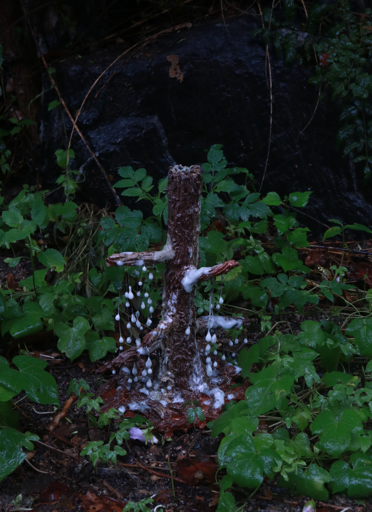

나는 ‘시간이 남긴 흔적이 반드시 상실만을 의미하는가’라는 질문에서 출발한다. 사라진 이후에도 완전히 지워지지 않는 감정과 기억은 특정한 형태로 남아 우리의 현재를 계속 건드린다.




작가 노트
죽음을 대하는 형식이나 태도는 각기 다를 수 있으나, 부정적인 감정은 사회적 가치 체계 속에서 반복적으로 생성된다.
나는 죽음을 하나의 사건이 아니라, 삶 속에서 지속적으로 축적되는 감각의 흐름으로 다룬다.